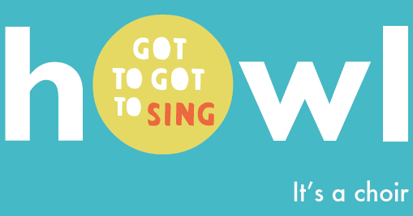

Informal, drop-in, daytime choir for grown ups.
No need to audition.
No need to read music.
Just a chance to belt out some top tunes.
Pre-school little howlers very welcome.
You sing, they play.
(Parental supervision required)
Central United Reformed Church Hall
Blatchington Road, Hove, BN3 3YF
FRIDAYS (term-time only)
10.30am – 11.30am
(doors open at 10.15am)
followed by a cuppa and a chat.
All welcome. Just drop in!
Sign up to the mailing list below to find out more.
Need more info? Email info@howl.org.uk or call Tamar on 07960 245564
You can also subscribe to our howl mailing list or view our privacy policy
Also see: night howl - evening choir and howling - youth choir
Like us on Facebook www.facebook.com/howl.choir
Or follow us on Instagram: howl choirs